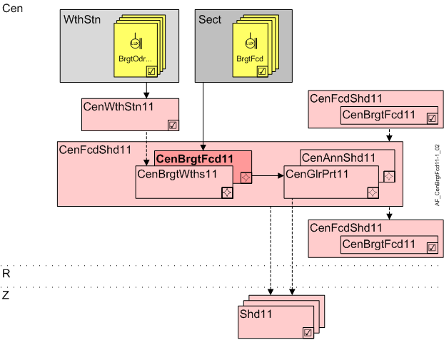

立面上的中央亮度 (CenBrgtFcd11)
Overview
应用功能》Central brightness on facade 11" (CenBrgtFcd11）直接测量立面上的亮度。

岑 | 中央职能 |
WthStn | 气象站 |
BrgtOdr... | 室外亮度北/East/South/West |
教派 | 幕墙部门 |
BrgtFcd | 外墙领域的亮度 |
CenWthStn11 | Central weather station 11, measurements for outside air temperature, brightness, solar radiation, wind speed, precipitation |
CenFcdShd11 | Central facade shading for automatic 11 |
CenBrgtWths11 | Central brightness from weather station 11 |
CenBrgtFcd11 | Central brightness on facade 11 |
CenGlrPrt11 | Central anti-glare protection 11 |
CenAnnShd11 | Central annual shading 11 |
R | 房间 |
Z | 房间部分的遮阳区域 |
Shd11 | Shading 11, for shading and daylight use with venetian blinds or awnings，幕墙部门的小组成员 |
Function
立面上的传感器测量室外亮度。
Configuration
没有任何。
Interface
界面 | 描述 | 类型 | 参考号 | 所有者 |
|---|---|---|---|---|
BrgtFcd | Brightness on facade | AI | ◉ | Central function / Device |
Engineering and commissioning
传感器应与立面部分的窗户具有相同的亮度条件，即安装在立面上。如果传感器受到其他亮度条件的影响，例如，使用 AF CenBrgtWths11安装在屋顶上。
Hierarchical grouping
在 CenFcd11 中，CenGlrPrt11 / CenAnnShd11 需要从属 AF CenBrgtFcd11。这些将其数据分发到下级中央 AFs 或直接分发到连接的房间部分。